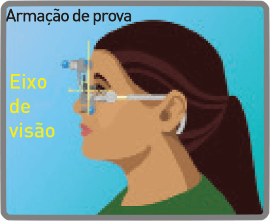
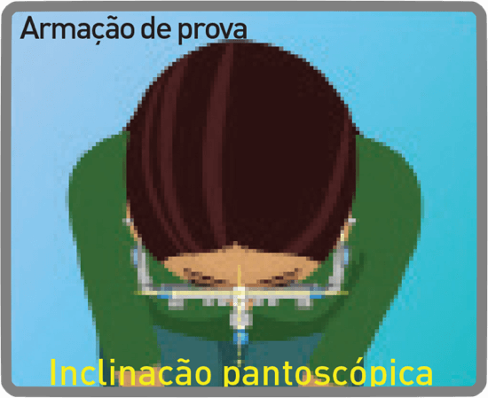
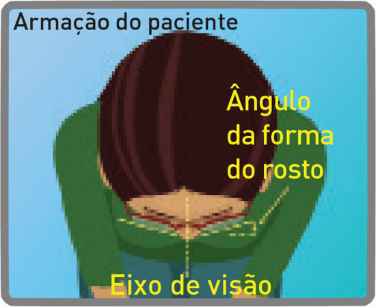

Características:
Funções:
Vai ao encontro das expectativas e necessidades do cliente
Benefícios:
Precisão da prescrição e ótica otimizadas
Alturas de montagem mínimas:
Variável de 11 mm e superior, fixa de 11 mm, 13 mm, 15 mm, 18 mm
  
A tecnologia Shamir As-Worn colmata a diferença geométrica entre a armação de prova e a armação escolhida pelo paciente.